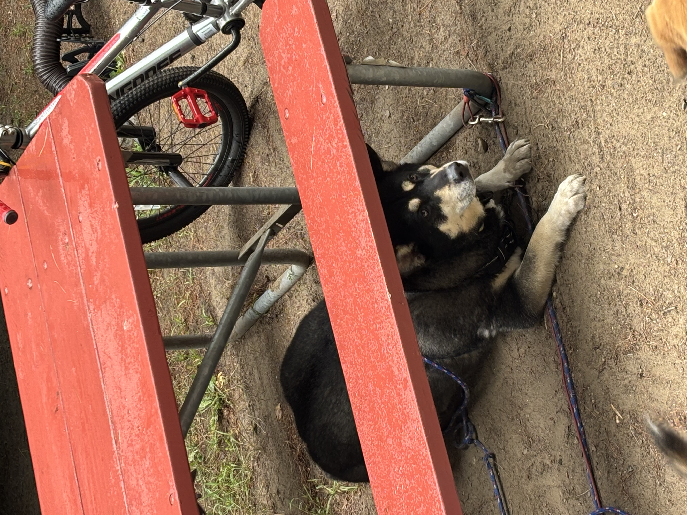

Dieting for Dogs

Dietary Health is Important
Diet plays a central role in maintaining a dog’s overall health, energy levels, and long-term well-being. A balanced diet that is appropriate for a dog’s age, size, and activity level helps support healthy weight management, digestion, and immune function. High-quality protein, healthy fats, and essential vitamins and minerals all contribute to proper development and daily vitality. Consistent feeding schedules and portion control are also important, as overfeeding can lead to obesity and related health issues, while underfeeding can result in nutritional deficiencies. Monitoring a dog’s body condition and adjusting their diet as needed helps ensure they remain healthy throughout all stages of life.

Going Out
Exploring the outdoors is another important aspect of a dog’s physical and mental health. Regular walks and outings provide more than just exercise—they offer mental stimulation through new sights, sounds, and scents. These experiences help reduce boredom and can improve overall behavior by giving dogs a productive outlet for their curiosity. Whether it is a walk around the neighborhood or a visit to a nearby park, allowing a dog to safely explore their environment helps build confidence and keeps their mind engaged. Even short, consistent outings can make a meaningful difference in their overall well-being.

Exercise
Exercise is essential for maintaining a dog’s physical fitness and preventing health issues related to inactivity. Regular movement supports strong muscles, healthy joints, and cardiovascular health. The type and intensity of exercise should be tailored to the individual dog, taking into account their age, breed, and health condition. Some dogs may benefit from long walks or runs, while others may require gentler activities such as slow-paced strolls or light indoor movement. Consistency is more important than intensity, and daily exercise helps regulate energy levels while reducing stress and anxiety.
Play
Play is an equally important component of a healthy lifestyle, contributing to both physical activity and emotional enrichment. Engaging in games such as fetch, tug-of-war, or hide-and-seek helps strengthen the bond between dog and owner while providing an outlet for natural instincts. Play also encourages mental stimulation, especially when toys or interactive games are involved. Rotating toys and introducing new activities can help keep playtime exciting and prevent boredom. When combined with proper diet, exploration, and exercise, regular play supports a well-rounded and fulfilling life for any dog.